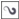

Быстрые ссылки на процедуры, описанные на этой странице:
• |
• |
Линзы изменяют вид области объекта, которая находится под линзой, а не фактические свойства и атрибуты объектов. Можно применять линзы для любого векторного объекта, например прямоугольника, эллипса, замкнутого пути или многоугольника. Кроме того, можно изменять вид фигурного текста и растровых изображений. Если линза применяется для векторного объекта, то сама линза становится векторным изображением. Аналогично этому, если поместить линзу на растровое изображение, она также становится растровым изображением.
После применения линзы ее можно скопировать и использовать для другого объекта.
Типы линз, использованные для изображения-оригинала (крайнее левое): (слева направо) Температурная карта, Увеличение и Специальная палитра
Для объектов можно применить следующие типы линз.
| Применение линзы |
1. |
Выделите объект.
|
2. |
Выберите пункт Эффекты |
3. |
Выберите тип линзы в списке в окне настройки Линза.
|
4. |
Укажите необходимые параметры.
|
Невозможно напрямую применить эффект линзы для связанных
групп, например объектов с контурами, скосами, вытягиваниями, для
теней, простого текста или объектов, созданных с помощью
инструмента Художественное оформление .
|
Можно предварительно просмотреть различные типы линз в
реальном времени, прежде чем автоматически применять для
рисунка одну из них. Это можно сделать, нажав кнопку
Заблокировать, а затем выбрав для предварительного просмотра
линзу и параметры. Когда будет определено, какую линзу следует
использовать, нажмите кнопку Применить или повторно нажмите
кнопку Заблокировать, чтобы возобновить автоматическое
применение линз во время предварительного просмотра.
|
| Копирование линзы |
1. |
Выберите объект, в который требуется скопировать линзу.
|
2. |
Выберите пункт Эффекты |
3. |
Щелкните объект, из которого требуется скопировать линзу.
|
Copyright 2012 Corel Corporation. Все права защищены.